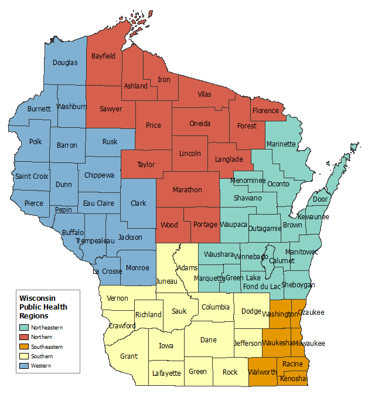

Birth Trends for Newborns and Their Mothers in Southern Wisconsin Counties
Explanations of certain attributes in the map dropdown bar:
- "The Crude Birth Rate is the number of resident live births divided by the resident population times 1,000."(WDHS).
- "The General Fertility Rate is the number of resident live births divided by the number of females ages 15-44 times 1,000."(WDHS).
- Low Birthweights are all births under 2,500 Grams.
- Births at Home are births at the place the mother lives.
- Map data is from 2017, the map data and information on this website are from: Wisconsin Department of Health Services
This website was designed to help the user analyze newborns and newborn mothers birth trends for Southern Wisconsin counties in 2017. Analyzing trends in newborns and their mothers is important in understanding a population's characteristics. With such data on newborns and their mothers, policies can be created to help racial, education, age, and others groups of people in need of aid.
The counties used in the interactive map fall within two public health regions of the Wisconsin Department of Health Services(WDHS), the Southern region and the Southeastern region. The public health regions of Wisconsin are displayed in the image above. The Southern region consists of Adams, Columbia, Crawford, Dane, Dodge, Grant, Green, Iowa, Jefferson, Juneau, Lafayette, Richland, Rock, Sauk, and Vernon counties. The Southeastern region consists of Kenosha, Milwaukee, Ozaukee, Racine, Walworth, Washington, and Waukesha counties. These regions were chosen for this map because they contain associated counties that are the most densely populated in Wisconsin.